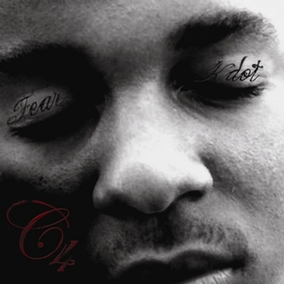
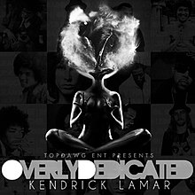

Conhecendo o artista
Nascido em 17 de Junho de 1987 Kendrick Lamar Duckworth, mais conhecido como Kendrick Lamar, é um rapper, produtor musical e compositor, considerado como um dos artistas mais influentes de sua geração, além de um dos maiores rappers e letristas de todos os tempos
Kendrick Lamar ganhou 81 prêmios de 186 indicações, incluindo 12 Grammy Awards e ASCAPVanguard Award por seu trabalho como compositor. Lamar recebeu um total de sete indicações nos Grammy Awards de 2014, incluindo Album of the Year. Um ano depois, no Grammy Awards de 2015, ele ganhou Best Rap Song e Best Rap Performance por sua música " i ". Lamar recebeu sua segunda nominação ao Álbum do Ano pelo 58º Grammy Awards, liderando a lista com 11 categorias. Para o último, ele se tornou o rapper com a maioria das nomeações em uma única noite. Na cerimônia, Lamar ganhou cinco prêmios, incluindo Melhor Álbum Rap para To Pimp a Butterfly, Melhor Rap Song e Melhor Rap Performance para " Alright ", e Melhor Rap / Sung Colaboração para " These Walls ". Em 2015, Lamar recebeu o Prêmio de Ícones Geradores do Senado do Estado da Califórnia pelo Senador do Estado Isadore Hall III. Ele recebeu sete indicações nos Grammy Awards de 2018 pela DAMN. e suas músicas " HUMBLE " e " LOYALTY " Em 2018, o rapper se tornou o primeiro artista do universo pop a vencer do prestigiado prêmio Pulitzer na categoria música com "DAMN.", seu quarto álbum de estúdio (2017).
Biografia
|
Kendrick Lamar nasceu em Compton, Califórnia, e os pais em Chicago, Illinois. Em 1995, com 8 anos de idade, Lamar viu seus ídolos Tupac Shakur e Dr. Dre gravando o videoclipe para o single de sucesso California Love, um momento muito significativo na sua vida. Na adolescência, Lamar frequentou a Centennial High School em Compton, onde revelou ser um ótimo aluno Com dezesseis anos, Lamar lançou sua primeira coletânea de temas, uma mixtape intitulada Youngest Head N**ga in Charge, sob o nome de K-Dot. Essa mixtape levou Lamar a assinar com a gravadora Top Dawg Entertainment (TDE), através da qual lançou mais duas mixtapes até abandonar seu nome de K-Dot e adotar seu nome de batismo. Em seguida, ele lançou um EP auto-intitulado no final de 2009. No mesmo ano, Lamar formou na TDE o grupo Black Hippy, com os rappers Jay Rock, Ab-Soul e Schoolboy Q. Ele declarou que 2Pac, Dr. Dre, The Notorious B.I.G, Jay-Z, Nas e Eminem são seus 6 rappers favoritos. Lamar também citou Lil Wayne como inspiração de sua carreira. Em 14 de setembro de 2010, Lamar lançou a sua quinta mixtape, Overly Dedicated, em plataformas de venda digitais, sob a TDE, e mais tarde, em 23 de setembro desse mesmo ano, lançou Overly Dedicated gratuitamente online. Em 2 de Julho de 2011, Lamar lançou seu primeiro álbum, Section.80, que chegou a ser número 113 na Billboard 200. |
Discografia
Kendrick possui 8 albums oficiais, sendo eles:C4
|  |
C4 é a terceira mixtape solo de Kendrick, então conhecido como "K.Dot". Foi
lançado em 30 de janeiro de 2009 pela
Top Dawg Entertainment. A mixtape contém 17 faixas e inclui participações especiais dos companheiros de
gravadora
TDE de Lamar, Ab-Soul, Punch, Jay Rock, ScHoolboy Q e BO.
O album foi fortemente inspirada no álbum aclamado pela crítica do colega rapper americano Lil Wayne de 2008, Tha Carter III (C3), sendo composta principalmente por freestyles sobre instrumentais do álbum de Wayne, além de algumas faixas originais. |
Overly Dedicated
|  |
Overly Dedicated é a quarta mixtape solo de Kendrick, lançada em 14 de
setembro de 2010, via Top Dawg
Entertainment. O álbum conta com participações especiais de Dash Snow, Jhené Aiko, Schoolboy Q, Ab-Soul, Ash
Riser, Dom Kennedy e Murs, entre outros.
A produção do álbum foi feita por vários produtores internos da TDE, incluindo
King Blue, Sounwave, Tae Beast e
Willie B; outros produtores, como Tommy Black, Jairus "J-Mo" Mozee e Wyldfyer, também contribuíram com a
produção.
A mixtape vendeu um total de 12.000 cópias em outubro de 2012.
|
Untitled Unmastered

|
Consiste em demos inéditas que se originaram durante a gravação do álbum de
Lamar, To Pimp a Butterfly (2015),
continuando a exploração desse trabalho de temas politicamente carregados e filosóficos, bem como sua
experimentação com free jazz, soul, música de vanguarda e estilos de funk.
todos os titulos das musicas presentes nesse album apresentam sua data de gravação. |
Section.80

|
foi primeiro album de estudio de Kendrick, lançado exclusivamente através da
iTunes Store em 2 de julho de 2011, sob a Top Dawg Entertainment. O álbum conta com participações especiais de
GLC, Colin Munroe, Ashtro Bot, BJ the Chicago Kid, Schoolboy Q, Ab-Soul e vocais do falecido cantor e
compositor Alori Joh. A produção foi realizada principalmente pelos produtores internos da Top Dawg do grupo
de produção Digi+Phonics, juntamente com THC, Tommy Black, Wyldfyer, Terrace Martin e J. Cole. O álbum
conceitual apresenta temas líricos apresentados por Lamar, como racismo e tolerância a medicamentos, e foi bem
recebido pelos críticos de música contemporânea.
|

|
Após o lançamento e sucesso de seu álbum de 2011 Section.80, Lamar assinou contrato com uma grande gravadora, a Interscope de Dr. Dre. Ele disse a HipHopDX que ele não queria trabalhar com os produtores de alto perfil, mas com aqueles que ele mesmo havia estabelecido.
Lamar também disse que o álbum vai mostrar a influência de sua cidade natal:. "O garoto que está tentando escapar dessa influência, sempre foi preso em razão de circunstâncias". O título do álbum refere-se principalmente à inocência da infância de Lamar em Compton. Depois de manter a sigla do título do álbum escondido, Lamar mais tarde revelou que M.A.A.D é um acrônimo com dois significados: My Angry Adolescence Divided " ou " My Angels on Angel Dust ". |
To Pimp a Butterfly

|
Kendrick Lamar primeiro revelou planos de lançar um continuação para a sua estreia por uma grande gravadora, Good Kid, M.A.A.D City de 2012, em 28 de fevereiro de 2014, durante uma entrevista à Billboard. Lamar descreveu o álbum, que incorpora elementos de funk, poesia falada e jazz, como "honesto, com medo e sem remorso."
Em uma entrevista à revista Rolling Stone, Kendrick indicou que o título era uma brincadeira com o romance de Harper Lee, To Kill a Mockingbird. Ele foi citado como dizendo: "Basta colocar a palavra" pimp "ao lado de" borboleta "... É uma viagem. Isso é algo que sera uma frase para sempre. Vai ser ensinada em cursos universitários -.. Eu realmente acredito nisso." |
DAMN

|
Foi lançado em 14 de abril de 2017, pelas editoras discográficas Top Dawg Entertainment, Aftermath Entertainment e Interscope Records. O disco teve a produção executiva executada por Anthony "Top Dawg" Tiffith, Dr. Dre, Sounwave, DJ Dahi, Mike Will Made It e Ricci Riera.
A capa do álbum foi desenhada por Vlad Sepetov, que criou as capas de álbuns dos dois projetos anteriores de Lamar, To Pimp a Butterfly e Untitled Unmastered. Damn arrebatou o Grammy para Melhor Álbum de Rap na edição de 2018 da premiação, sendo o 2ª álbum do rapper a vencer nessa categoria, depois de To Pimp a Butterfly, em 2016. Também 2018, venceu o prêmio de o de Outstanding Album (algo como "Álbum Extraordinário", em uma tradução livre) como no NAACP Image Awards. Em 2017, venceu o prêmio de Álbum do Ano no BET Hip Hop Awards e o de Álbum de Rap/Hip Hop Favorito no American Music Awards. Em março de 2018, venceu o prêmio de álbum hip hop do ano no iHeartRadio Music Awards. Em abril de 2018, foi o primeiro álbum de música popular a levar um Prêmio Pulitzer de Música, premiação antes concedida apenas a álbuns de jazz e música clássica. No site oficial, o Pulitzer justifica a honra: "DAMN é uma coleção virtuosa de músicas unificada por sua autenticidade e dinamismo rítmico, que oferece uma visão da complexidade da vida moderna de afro-americanos" |
Mr. Morale & the Big Steppers (MM&TBS)

|
lançado em maio de 2022 Mr. Morale & the Big Steppers marca sua estreia sob o coletivo PGLang e sua despedida da TDE. Com letras confessionais, o álbum reflete sobre suas experiências terapêuticas, abordando temas como infância, trauma geracional e adoração de celebridades. Misturando hip-hop consciente com elementos de jazz, R&B, trap e soul, o álbum recebeu elogios pela produção minimalista. Com participações especiais e narrações de artistas como Blxst, Sampha e Ghostface Killah, Mr. Morale & the Big Steppers alcançou o topo da Billboard 200 e recebeu o prêmio de Melhor Álbum de Rap no Grammy Awards. Lamar também embarcou na Big Steppers Tour, sua quinta turnê solo, que passou por várias regiões ao redor do mundo. |